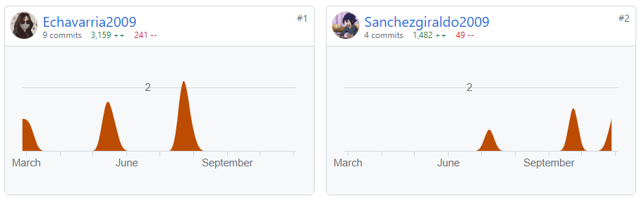

- Inicio
- Tecnología
- Sociales
- Matemáticas
- Inglés
- Religión
- Biología
- Acerca de
OPERADORES ELECTRICOS
El concepto de evolución tecnológica es confluente con el de revolución tecnológica,
puesto que solo durante los períodos de mayor innovación técnica se marca la diferencia
del ritmo de desarrollo entre ambos, y de la trascendencia que existe entre los conceptos
genéricos de evolución y revolución. Durante la mayor parte de la historia de la (Humanidad),
el ritmo de dichas innovaciones fue lento, sin embargo, a partir de la Segunda Guerra Mundial,
la humanidad ha experimentado un crecimiento exponencial en el uso y el desarrollo de la tecnología.
La expresión revolución tecnológica o revolución científico-técnica, se refiere a las
transformaciones técnicas y las implicaciones económicas y sociales de la llamada tercera
} revolución industrial (desde la segunda mitad del siglo xx en adelante), aunque también
se utiliza frecuentemente la expresión para referirse a las dos primeras grandes
transformaciones que han merecido el nombre de Revolución económica: la Revolución
neolítica y la Revolución Industrial de los siglos XVIII y XIX.
1 ¿Cuándo surge la tecnologia?
La tecnología no tiene una fecha de nacimiento como tal, es decir, no podemos decir
que a partir de un año específico se haya creado o inventado. Parece ser algo que
existe desde los inicios de nuestra especie. De hecho, sirve para distinguir a la
humanidad de otras especies de homínidos.
